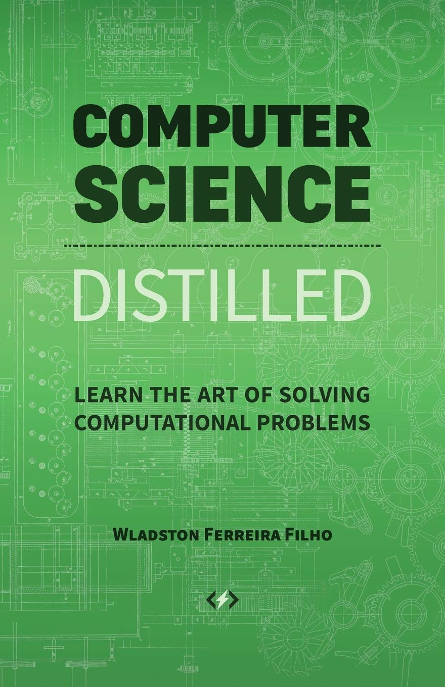
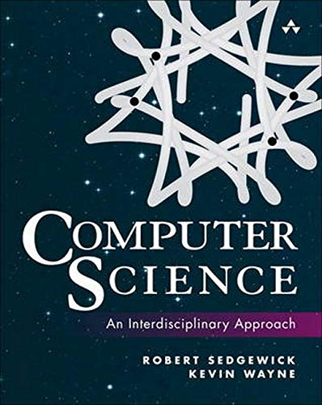
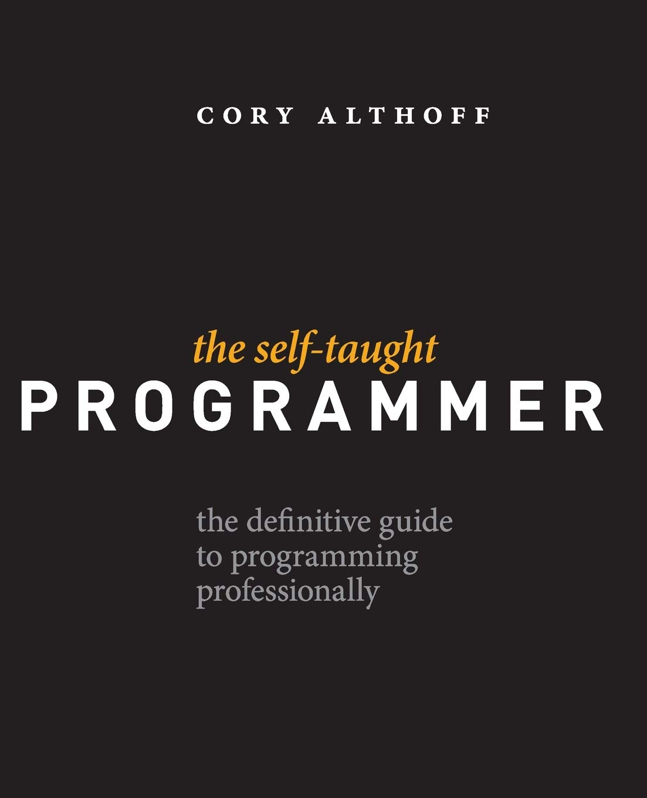
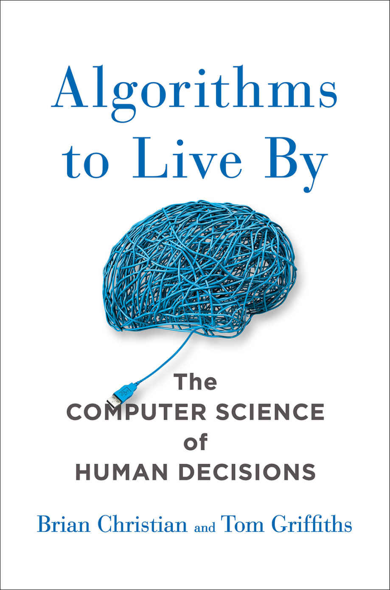
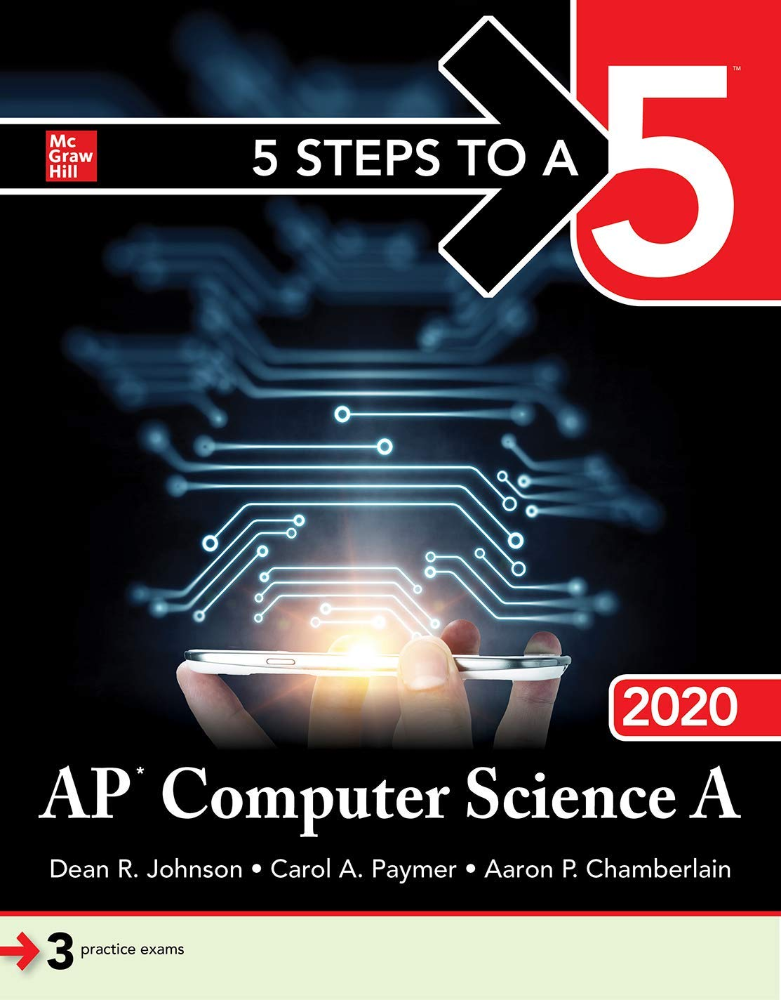
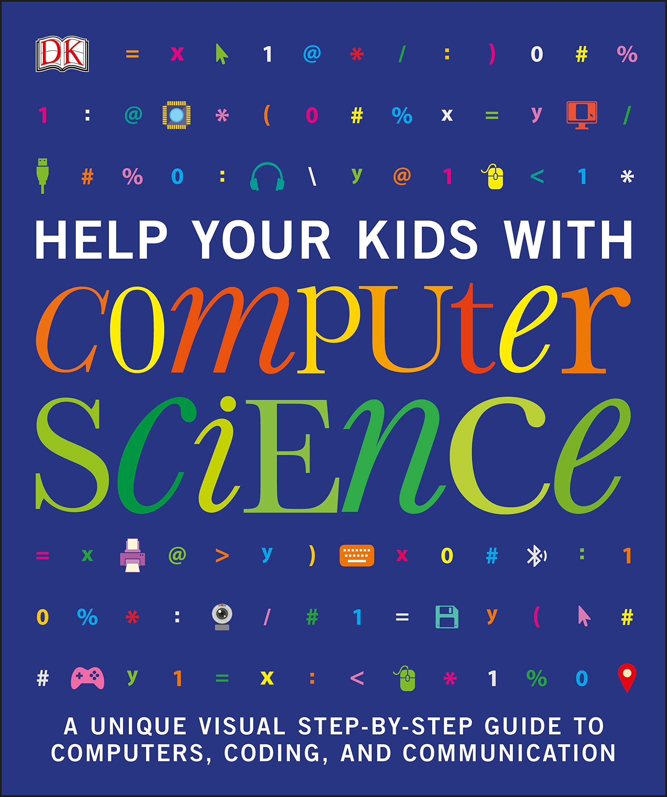
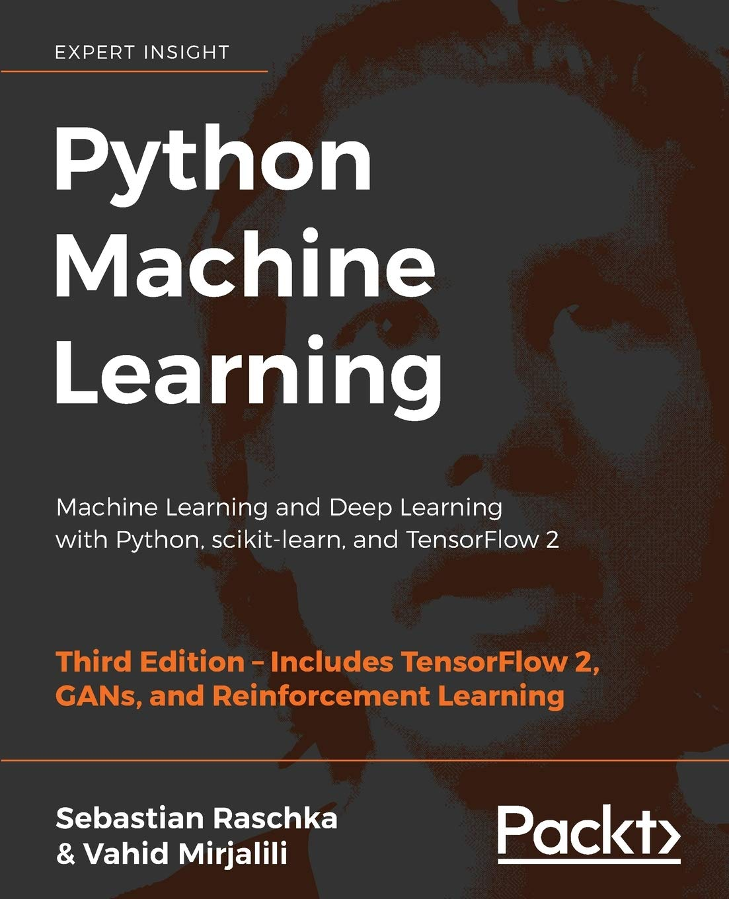
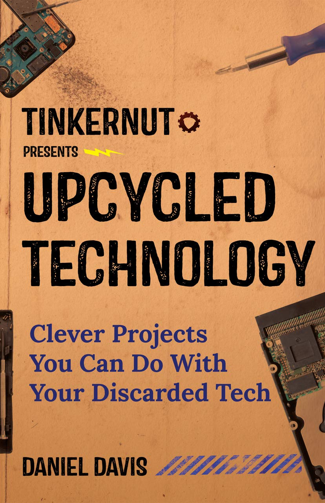

Booklist
- Computer Science Distilled: Learn the Art of Solving Computational Problems
A walkthrough of computer science concepts you must know. Designed for readers who don't care for academic formalities, it's a fast and easy computer science guide. It teaches the foundations you need to program computers effectively. After a simple introduction to discrete math, it presents common algorithms and data structures. It also outlines the principles that make computers and programming languages work.
Price: $40
- Computer Science: An Interdisciplinary Approach
Robert Sedgewick and Kevin Wayne’s Computer Science: An Interdisciplinary Approach is the ideal modern introduction to computer science with Java programming for both students and professionals. Taking a broad, applications-based approach, Sedgewick and Wayne teach through important examples from science, mathematics, engineering, finance, and commercial computing.
Price: $40
- The Self-Taught Programmer: The Definitive Guide to Programming Professionally
I am a self-taught programmer. After a year of self-study, I learned to program well enough to land a job as a software engineer II at eBay. Once I got there, I realized I was severely under-prepared. I was overwhelmed by the amount of things I needed to know but hadn't learned yet. My journey learning to program, and my experience at my first job as a software engineer were the inspiration for this book.
Price: $40
- Algorithms to Live By: The Computer Science of Human Decisions
A fascinating exploration of how computer algorithms can be applied to our everyday lives, helping to solve common decision-making problems and illuminate the workings of the human mind
Price: $40
 Everything You Need to Ace Computer Science and Coding in One Big Fat Notebook: The Complete Middle School Study Guide (Big Fat Notebooks)
Everything You Need to Ace Computer Science and Coding in One Big Fat Notebook: The Complete Middle School Study Guide (Big Fat Notebooks)
This Big Fat Notebook makes it all “sink in” with key concepts, mnemonic devices, definitions, diagrams, and doodles to help you understand computer science.
Price: $30.5
 Clean Code: A Handbook of Agile Software Craftsmanship
Clean Code: A Handbook of Agile Software Craftsmanship
Even bad code can function. But if code isn’t clean, it can bring a development organization to its knees. Every year, countless hours and significant resources are lost because of poorly written code. But it doesn’t have to be that way.
Price: $40.5
- 5 Steps to a 5: AP Computer Science A 2020
5 Steps to a 5: AP Computer Science A 2020 introduces an easy to follow, effective 5-step study plan to help you build the skills, knowledge, and test-taking confidence you need to reach your full potential. The book includes hundreds of practice exercises with thorough answer explanations and sample responses. You’ll learn how to master the multiple-choice questions and achieve a higher score on this demanding exam.
Price: $30
- Help Your Kids with Computer Science
A clear, visual guide to the technical, societal, and cultural aspects of computers and social media, using step-by-step diagrams and graphics to explore how kids can get the most from computers while staying safe.
Price: $25
- Python Machine Learning: Machine Learning and Deep Learning with Python, scikit-learn, and TensorFlow 2, 3rd Edition
Applied machine learning with a solid foundation in theory. Revised and expanded for TensorFlow 2, GANs, and reinforcement learning.
Price: $40
- Upcycled Technology: Clever Projects You Can Do With Your Discarded Tech
#1 New Release in Electronics and Microelectronics ─ Transform old tech into amazing, modern inventions Fans of Popular Science, Smithsonian’s Maker Lab, and The Big Book of Makerspace Projects will love Upcycled Technology.
Price: $10
I declare that my assignment is wholly my own work in accordance with Seneca Academic Policy.
No part of this assignment has been copied manually or electronically from any other source (including web sites)
except for the information supplied by the WEB222 instructor and / or made available in this assignment for my use.
I also declare that no part of this assignment has been distributed to other students.
Name: JIAQI WANG
Dated: APRIL 8, 2020